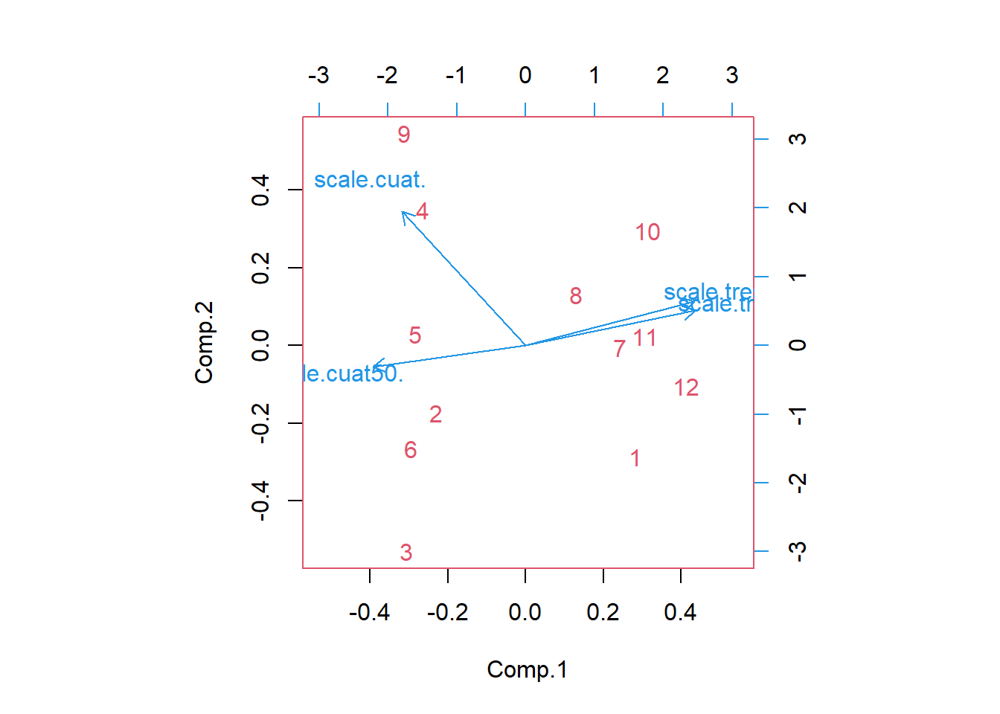
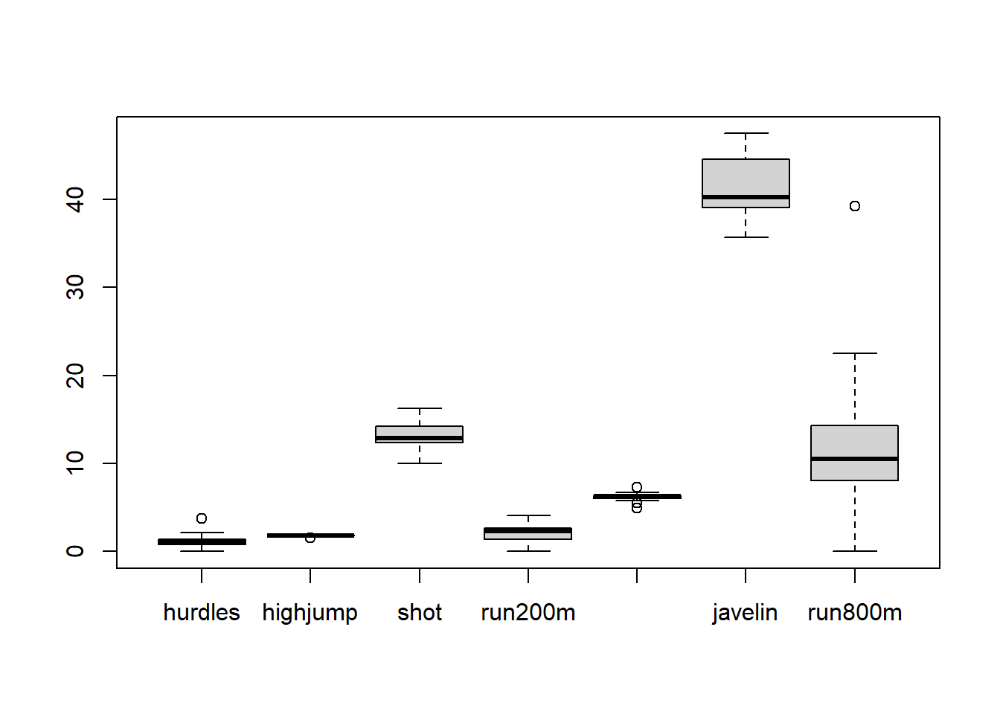
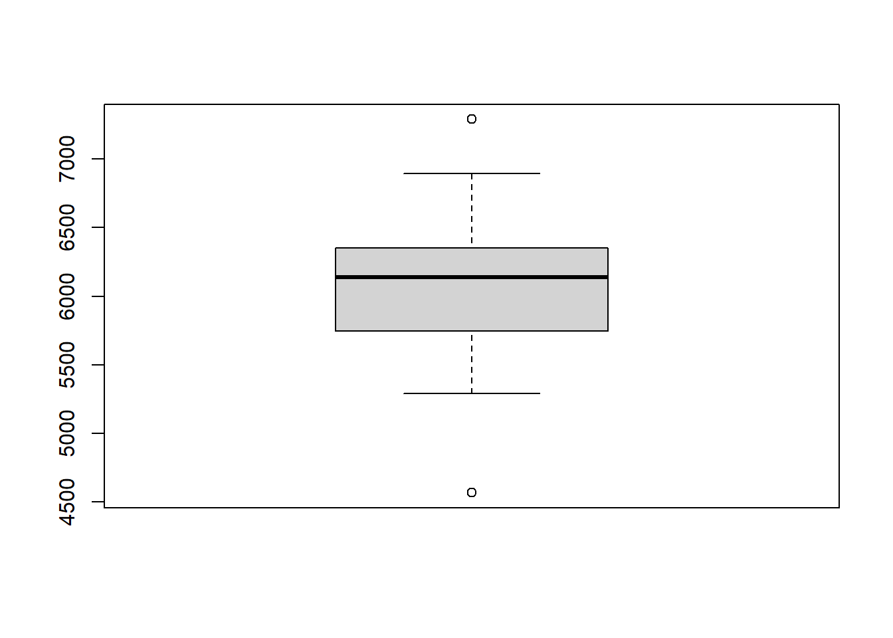
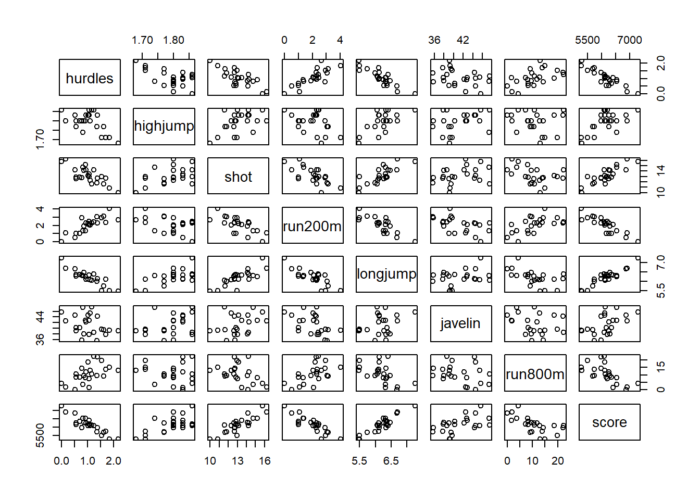
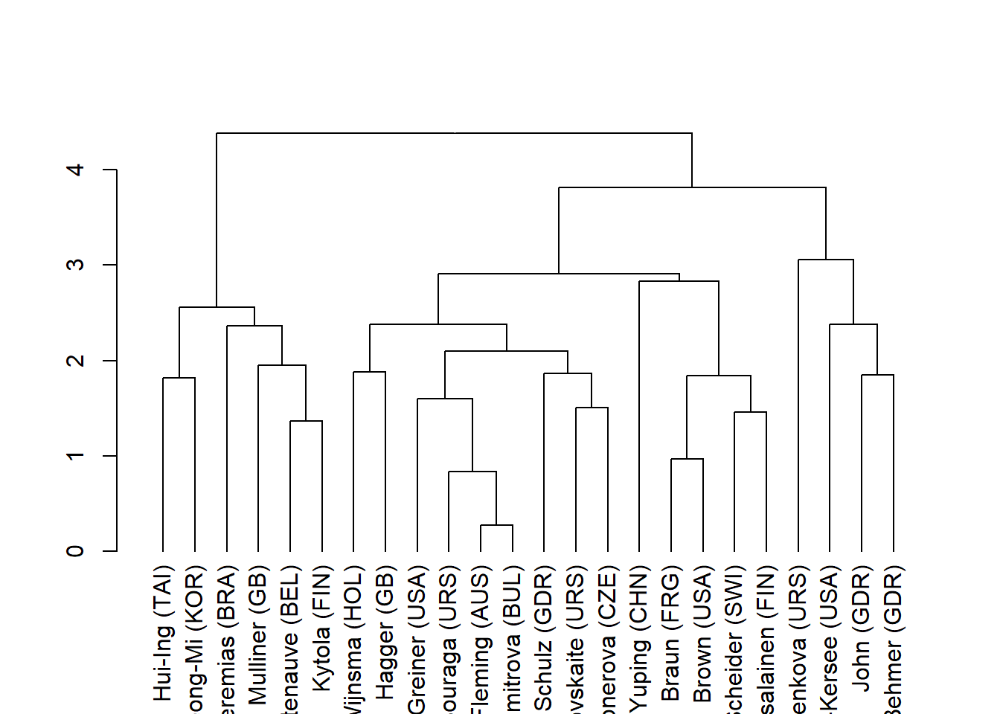
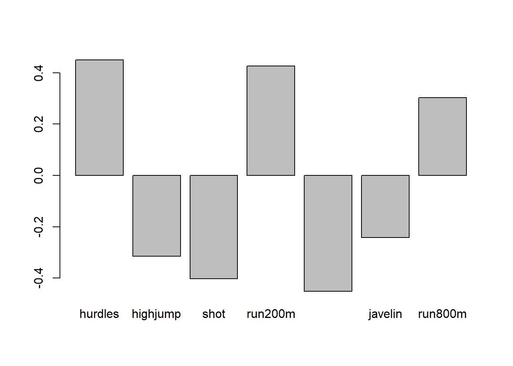
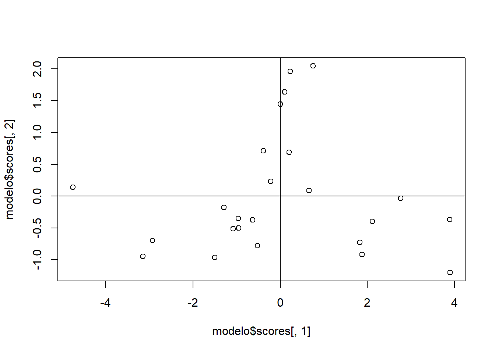
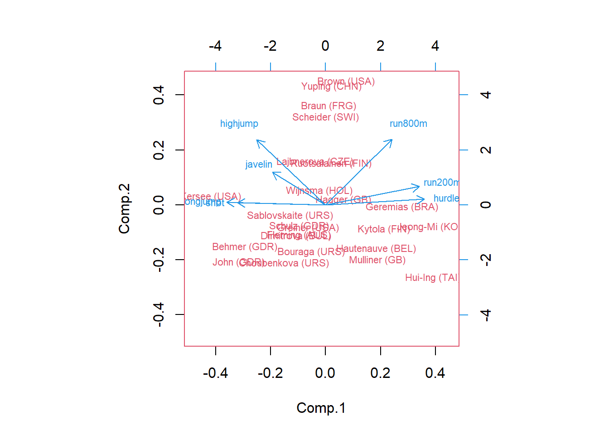

COMPONENTES PRINCIPALES
Un problema central en el análisis de datos multivariantes es la reducción de la dimensionalidad
Es posible describir con precisión los valores de p variables por un pequeño subconjunto r < p de ellas, reduciendo la dimensión del problema a costa de una pequeña pérdida de información.
Objetivo: dadas n observaciones de p variables, se analiza si es posible representar adecuadamente esta información con un número menor de variables construidas como combinaciones lineales de las originales.
Por ejemplo, con variables con alta dependencia es frecuente que un pequeño número de nuevas variables (menos del 20% de las originales ) expliquen la mayor parte (más del 80%) de la variabilidad original.
Su utilidad es doble:
Permite representar óptimamente en un espacio de dimensión pequeña, observaciones de un espacio general p-dimensional. Es el primer paso para identificar posibles variables latentes o no observadas, que están generando la variabilidad de los datos.
Permite transformar las variables originales correlacionadas, en nuevas variables incorrelacionadas, facilitando la interpretación de los datos.
La primera componente tiene la mayor varianza posible para una combinación lineal de las variables originales, la segunda componente tiene la segunda mayor varianza posible para una combinación lineal pero ortogonal a la primera componente, etc.
Antes de realizar un ACP se debe tomar la desición si trabajar con los datos originales o se se debe estandarizar cada variable a una media de cero y varianza unidad. Si las variables no se estandarizan y una variable tiene una varianza mas grande, entonces esta variable controlará la primera componente principal. la estandarización hace que todas las variables tengan el mismo peso. La fórmula para realizar la estandarización es
\[\Large X_i=\frac{x_i-\bar x}{\sigma}\]
Donde:
\(\large X_i\) es cada observación
\(\Large \bar x\) es la media del vector
\(\Large \sigma\) es la desviación estándar del conjunto de datos
sea x un vector aleatorio con k componentes \(\Large E(x)=\mu\) y \(\large var-cov(x)=D(x)=\sum _x>0\).
Hay un famoso teorema en álgebra lineal que nos permite factorizar matrices simétricas, digamos \(\sum\)como:
\[\large \sum=\Gamma \Lambda \Gamma' \]
Donde \(\Large \Lambda\) es una matriz diagonal con las raíces propias de \(\Large \sum\) y \(\Large \Gamma=[\gamma_1,\gamma_2,...,\gamma_k]\) que contiene los vectores propios de \(\Large \sum\)
\[\large \Lambda= \left[ \begin{array}{cccc} \lambda_1 & 0 & \cdots & 0\\ 0 & \lambda_2 & \cdots & 0 \\ \vdots & \vdots& \ddots & \vdots \\ 0 & 0 & \cdots & \lambda_k \end{array}\right]\]
Donde \(\Large \lambda_1\geq \lambda_2 \geq\cdots \geq \lambda_k\)
Consideremos la transformación lineal:
\[\Large y=\Gamma (x-\mu)\] La idea es encontrar \(\Large y_k\) componentes principales que sean combinaciones lineales de las \(\Large x_i\) variables originales que describen cada muestra, es decir:
\[\Large y_1=\gamma_{11}x_1+\gamma_{12}x_2+\cdots+\gamma_{1k}x_k\]
\[\Large y_2=\gamma_{21}x_1+\gamma_{22}x_2+\cdots+\gamma_{2k}x_k\] \[\Large y_k=\gamma_{k1}x_1+\gamma_{k2}x_2+\cdots+\gamma_{kk}x_k\]
Se define
\[ \Large y=\left [\begin{array}{l} y_1 \\ y_2\\ \vdots\\ y_k \end{array}\right]=A'(x-\mu)\]
\[\Large z_i=\frac{y_i}{\sqrt \lambda_i}\] con \(i=1,...k\) estas variables serán llamadas las componentes principales estandarizadas de x. La varianza de \(y_i\) sería
\[\large var(y_i)=\gamma_i'\sum \gamma_i=\lambda_i\] La covarianza de las variables sería:
\[\large cov(y_i,y_j)=\gamma_i'\sum \gamma_j=0\]
¿Cuántas componentes conservamos?
Se recomienda tomar varios aspectos en cuenta:
Objetivo de la reducción de dimensionalidad.
Si por ejemplo, pretendemos construir un indicador, obviamente el número a retener es solo de una componente.
Si no es claro, entonces consideramos las primera j componentes que posean el 80% de la variabilidad total.
Videos
Explicación de componentes principales en 5 minutos
Video completo de componentes principales
EJEMPLO
La siguiente base de datos proporciona las intensidades relativas de emisión de fluoresencia a cuatro longitudes de ondas diferentes (300,350,400,450) para 12 compuestos.
- Realizar un análisis descriptivo y de conglomerados para detectar posibles correlaciones.
## tress tress50 cuat cuat50
## 1 16 62 67 27
## 2 15 60 69 31
## 3 14 59 68 31
## 4 15 61 71 31
## 5 14 60 70 30
## 6 14 59 69 30
## 7 17 63 68 29
## 8 16 62 69 28
## 9 15 60 72 30
## 10 17 63 69 27
## 11 18 62 68 28
## 12 18 64 67 29## tress tress50 cuat cuat50
## tress 1.0000000 0.9138115 -0.4983509 -0.6701031
## tress50 0.9138115 1.0000000 -0.4644110 -0.6922815
## cuat -0.4983509 -0.4644110 1.0000000 0.4576692
## cuat50 -0.6701031 -0.6922815 0.4576692 1.0000000## Warning in dist(y, method = "euclidean"): NAs introduced by coercion## 1 2 3 4 5 6 7 8
## 2 5.590170
## 3 6.123724 1.936492
## 4 6.519202 2.500000 4.183300
## 5 5.700877 1.936492 2.738613 2.236068
## 6 5.700877 1.936492 1.581139 3.535534 1.581139
## 7 2.958040 4.743416 6.020797 5.123475 5.361903 5.809475
## 8 2.500000 4.183300 5.361903 4.330127 4.031129 4.609772 2.236068
## 9 6.982120 3.535534 4.873397 1.936492 2.500000 3.708099 6.123724 4.743416
## 10 2.738613 6.020797 7.245688 5.916080 5.916080 6.519202 2.500000 1.936492
## 11 2.738613 5.361903 6.519202 5.916080 5.916080 6.123724 1.936492 2.500000
## 12 3.872983 6.422616 7.582875 6.892024 7.245688 7.582875 1.936492 4.031129
## 9 10 11
## 2
## 3
## 4
## 5
## 6
## 7
## 8
## 9
## 10 6.224950
## 11 6.422616 2.236068
## 12 7.984360 3.535534 2.738613## Warning in dist(y): NAs introduced by coercion- Modelo de componentes principales
Para este ejemplo habrá cuatro componentes principales \(Z_1, Z_2, Z_3, Z_4\), cada una de las cuales será una combinación lineal de \(X_1,X_2,X_3, X_4\) las intensidades de fluorescencia a las longitudes de onda proporcionadas.
Los coeficientes de las ecuaciones de componentes principales están determinadas de manera que las nuevas variables, a diferencia de las variables originales no se encuentren correlacionadas unas con otras.
La generación de un nuevo conjunto de variables parece tener poco sentido porque se generan otras 4 variables nuevas, en lugar de las 4 variables originales.
Las componentes principales también se eligen de manera que la primera componente principal \(Z_1\)recoge la mayor parte de variación que hay en el conjunto de datos, la segunda recoje la siguiente mayor parte de la variación y así sucesivamente.
Por consiguiente, cuando haya correlación significativa el numero de componentes útiles será mucho menor que el número de variables originales
## Importance of components:
## Comp.1 Comp.2 Comp.3 Comp.4
## Standard deviation 1.6250008 0.7690778 0.59767468 0.27810657
## Proportion of Variance 0.7201712 0.1613129 0.09742228 0.02109362
## Cumulative Proportion 0.7201712 0.8814841 0.97890638 1.00000000## Call:
## princomp(x = y)
##
## Standard deviations:
## Comp.1 Comp.2 Comp.3 Comp.4
## 1.6250008 0.7690778 0.5976747 0.2781066
##
## 4 variables and 12 observations.##
## Loadings:
## Comp.1 Comp.2 Comp.3 Comp.4
## scale.tress. 0.547 0.238 0.395 0.699
## scale.tress50. 0.546 0.299 0.324 -0.712
## scale.cuat. -0.400 0.913
## scale.cuat50. -0.493 -0.145 0.856
##
## Comp.1 Comp.2 Comp.3 Comp.4
## SS loadings 1.00 1.00 1.00 1.00
## Proportion Var 0.25 0.25 0.25 0.25
## Cumulative Var 0.25 0.50 0.75 1.00## Comp.1 Comp.2 Comp.3 Comp.4
## [1,] 1.5952249 -0.76674361 -0.9919303 -0.18579179
## [2,] -1.2910394 -0.46621077 0.5611308 0.12874234
## [3,] -1.7229810 -1.41291035 0.1476040 0.05875581
## [4,] -1.4929986 0.92687704 0.6602714 -0.24302724
## [5,] -1.5928482 0.07815250 -0.3300050 -0.28009161
## [6,] -1.6564717 -0.70849123 -0.4773996 0.12056591
## [7,] 1.3629824 -0.01599411 0.5750957 -0.18164957
## [8,] 0.7319674 0.34816951 -0.5116887 -0.16093806
## [9,] -1.7556955 1.45109652 -0.1603809 0.24832833
## [10,] 1.7615838 0.78640005 -0.6266575 -0.08691731
## [11,] 1.7341863 0.06183714 0.0688296 0.75146211
## [12,] 2.3260895 -0.28218269 1.0851305 -0.16943893
Siendo así las cuatro componentes principales corresponden a:
\(\Large Z_1=0.547X_1+0.546X_2-0.4X_3-0.493X_4\) explicando el 72.01% de la varianza
\(\Large Z_2=0.238X_1+0.3X_2-0.913X_3-0.145X_4\) explicando el 16.13% de la varianza
\(\Large Z_3=0.395X_1+0.324X_2+0.856X_4\) explicando el 9.74% de la varianza
\(\Large Z_4=0.7X_1-0.712X_2\) explicando el 2.1% de la varianza
Donde \(X_1, X_2, X_3, X_4\) corresponden a las intensidades relativas estandarizadas a 300,350, 400 y 450 nm
INTERPRETACIÓN DE LOS COMPONENTES
Componentes de tamaño y forma
Cuando existe una alta correlación positiva entre todas las variables, el primer componente principal tiene todas sus coordenadas del mismo signo y puede interpretarse como un promedio ponderado de todas las variables, interpretadóse como un factor global de tamaño.
Los restantes componentes se interpretan como factores de forma y con coordenadas positivas y negativas, que implica que contraponen unos grupos de variables frente a otros.
Se debe observar en cada componente cual tiene mayor valor
Las coordenadas de una componente principal pueden agruparse según el signo, pueden omitirse aquellas que presentan valores por debajo de 0.1
** ¿Cuántas componentes elegir?** Seleccionar componentes hasta cubrir una proporción determinada de varianza, como el 80% o el 90%. Esta regla es arbitraria y debe aplicarse con cierto cuidado. Es posible que un único componente de tamaño recoja el 90% de la variabilidad y sin embargo pueden existir otros componentes que sean muy adecuados para explicar la forma de las variables.
Es importante recordar que las covarianzas (o correlaciones) miden únicamente las relaciones lineales entre las variables. Cuando entre ellas existan relaciones fuertes no lineales el análisis de componentes principales puede dar una información muy parcial de las variables.
Otro ejemplo
Se realizar un análisis de componentes principales sobre los resultados obtenidos en la competición de heptatlon femenino en los juegos de seul 1988, estos datos se encuentran en el paquete HSAUR2, y corresponden a los datos de 25 atletas sobre 8 variables.
- 100 m vallas (hurdles)
- Salto de altura (highjump)
- Lanzamiento de peso (shot)
- 200 m lisos (run200m)
- Salto de longitud (longjump)
- Lanzamiento de javalina (javelin)
- 800m (run800m)
- puntaje (score)
Instalar el paquete HSAUR2
Obtener los datos
recodificamos las pruebas relativas a las 3 carreras, vallas, 200m y 800m, restando el mayor valor en cada carrera, cada uno de los tiempos de los 35 atletas
Realizar un diagrama de dispersión y calcular la matriz de correlaciones

## hurdles highjump shot run200m longjump javelin run800m
## hurdles 1.00 -0.81 -0.65 0.77 -0.91 -0.01 0.78
## highjump -0.81 1.00 0.44 -0.49 0.78 0.00 -0.59
## shot -0.65 0.44 1.00 -0.68 0.74 0.27 -0.42
## run200m 0.77 -0.49 -0.68 1.00 -0.82 -0.33 0.62
## longjump -0.91 0.78 0.74 -0.82 1.00 0.07 -0.70
## javelin -0.01 0.00 0.27 -0.33 0.07 1.00 0.02
## run800m 0.78 -0.59 -0.42 0.62 -0.70 0.02 1.00- ¿Qué observa?
- ¿Entre que variables existe una correlación alta?
- ¿Entre que variables existe una corelación débil?
- Realicemos un análisis boxplot

- ¿Observa la existencia de puntos atípicos?
- De encontrar puntos atípicos que propone para solucionarlo?
- A que participante pertenece la observación atípica, porque tiene ese valor tan pequeño?
- Vuelva a estimar la matriz de correlaciones, sin el punto atípico
## hurdles highjump shot run200m longjump javelin
## Joyner-Kersee (USA) 0.00 1.86 15.80 0.00 7.27 45.66
## John (GDR) 0.16 1.80 16.23 1.09 6.71 42.56
## Behmer (GDR) 0.51 1.83 14.20 0.54 6.68 44.54
## Sablovskaite (URS) 0.92 1.80 15.23 1.36 6.25 42.78
## Choubenkova (URS) 0.82 1.74 14.76 1.37 6.32 47.46
## Schulz (GDR) 1.06 1.83 13.50 2.09 6.33 42.82
## Fleming (AUS) 0.69 1.80 12.88 1.03 6.37 40.28
## Greiner (USA) 0.86 1.80 14.13 1.92 6.47 38.00
## Lajbnerova (CZE) 0.94 1.83 14.28 2.30 6.11 42.20
## Bouraga (URS) 0.56 1.77 12.62 1.03 6.28 39.06
## Wijnsma (HOL) 1.06 1.86 13.01 2.47 6.34 37.86
## Dimitrova (BUL) 0.55 1.80 12.88 1.03 6.37 40.28
## Scheider (SWI) 1.16 1.86 11.58 2.31 6.05 47.50
## Braun (FRG) 1.02 1.83 13.16 2.22 6.12 44.58
## Ruotsalainen (FIN) 1.10 1.80 12.32 2.05 6.08 45.44
## Yuping (CHN) 1.24 1.86 14.21 2.44 6.40 38.60
## Hagger (GB) 0.78 1.80 12.75 2.91 6.34 35.76
## Brown (USA) 1.38 1.83 12.69 2.27 6.13 44.34
## Mulliner (GB) 1.70 1.71 12.68 2.36 6.10 37.76
## Hautenauve (BEL) 1.35 1.77 11.81 3.05 5.99 35.68
## Kytola (FIN) 1.62 1.77 11.66 3.13 5.75 39.48
## Geremias (BRA) 1.54 1.71 12.95 2.94 5.50 39.64
## Hui-Ing (TAI) 2.16 1.68 10.00 2.67 5.47 39.14
## Jeong-Mi (KOR) 1.84 1.71 10.83 4.05 5.50 39.26
## run800m score
## Joyner-Kersee (USA) 4.31 7291
## John (GDR) 1.92 6897
## Behmer (GDR) 0.00 6858
## Sablovskaite (URS) 8.04 6540
## Choubenkova (URS) 3.70 6540
## Schulz (GDR) 1.59 6411
## Fleming (AUS) 8.34 6351
## Greiner (USA) 9.45 6297
## Lajbnerova (CZE) 11.85 6252
## Bouraga (URS) 10.54 6252
## Wijnsma (HOL) 7.29 6205
## Dimitrova (BUL) 8.34 6171
## Scheider (SWI) 10.73 6137
## Braun (FRG) 18.62 6109
## Ruotsalainen (FIN) 12.86 6101
## Yuping (CHN) 22.47 6087
## Hagger (GB) 14.28 5975
## Brown (USA) 22.23 5972
## Mulliner (GB) 13.82 5746
## Hautenauve (BEL) 9.70 5734
## Kytola (FIN) 9.15 5686
## Geremias (BRA) 19.82 5508
## Hui-Ing (TAI) 13.10 5290
## Jeong-Mi (KOR) 14.97 5289
## hurdles highjump shot run200m longjump javelin run800m
## hurdles 1.00 -0.81 -0.65 0.77 -0.91 -0.01 0.78
## highjump -0.81 1.00 0.44 -0.49 0.78 0.00 -0.59
## shot -0.65 0.44 1.00 -0.68 0.74 0.27 -0.42
## run200m 0.77 -0.49 -0.68 1.00 -0.82 -0.33 0.62
## longjump -0.91 0.78 0.74 -0.82 1.00 0.07 -0.70
## javelin -0.01 0.00 0.27 -0.33 0.07 1.00 0.02
## run800m 0.78 -0.59 -0.42 0.62 -0.70 0.02 1.00- ¿Qué observa en cuanto a los valores de las correlaciones?
- Al estar los resultados de las 7 pruebas en diversas escalas(metros,segundos), se deben normalizar las variables.
## hurdles highjump shot run200m
## Joyner-Kersee (USA) -2.02598714 1.2662190 1.75444462 -2.16301826
## John (GDR) -1.71504427 0.1194546 2.04165699 -0.99944520
## Behmer (GDR) -1.03485674 0.6928368 0.68574739 -1.58656922
## Sablovskaite (URS) -0.23806563 0.1194546 1.37372123 -0.71122069
## Choubenkova (URS) -0.43240493 -1.0273097 1.05979142 -0.70054570
## Schulz (GDR) 0.03400938 0.6928368 0.21819235 0.06805301
## Fleming (AUS) -0.68504601 0.1194546 -0.19592783 -1.06349510
## Greiner (USA) -0.35466921 0.1194546 0.63899188 -0.11342169
## Lajbnerova (CZE) -0.19919778 0.6928368 0.73918225 0.29222764
## Bouraga (URS) -0.93768709 -0.4539276 -0.36959112 -1.06349510
## Wijnsma (HOL) 0.03400938 1.2662190 -0.10909618 0.47370233
## Dimitrova (BUL) -0.95712102 0.1194546 -0.19592783 -1.06349510
## Scheider (SWI) 0.22834867 1.2662190 -1.06424432 0.30290262
## Braun (FRG) -0.04372634 0.6928368 -0.00890581 0.20682778
## Ruotsalainen (FIN) 0.11174509 0.1194546 -0.56997185 0.02535308
## Yuping (CHN) 0.38382011 1.2662190 0.69242675 0.44167739
## Hagger (GB) -0.51014065 0.1194546 -0.28275947 0.94340155
## Brown (USA) 0.65589512 0.6928368 -0.32283562 0.26020269
## Mulliner (GB) 1.27778086 -1.6006919 -0.32951498 0.35627753
## Hautenauve (BEL) 0.59759333 -0.4539276 -0.91061910 1.09285130
## Kytola (FIN) 1.12230942 -0.4539276 -1.01080946 1.17825116
## Geremias (BRA) 0.96683799 -1.6006919 -0.14917232 0.97542649
## Hui-Ing (TAI) 2.17174161 -2.1740741 -2.11958283 0.68720198
## Jeong-Mi (KOR) 1.54985587 -1.6006919 -1.56519615 2.16034951
## longjump javelin run800m score
## Joyner-Kersee (USA) 2.6504631 1.2631989 -1.04165853 2.36063285
## John (GDR) 1.2562469 0.3694941 -1.43045040 1.54252238
## Behmer (GDR) 1.1815567 0.9403120 -1.74278528 1.46154190
## Sablovskaite (URS) 0.1109979 0.4329183 -0.43488295 0.80123954
## Choubenkova (URS) 0.2852749 1.7821242 -1.14088993 0.80123954
## Schulz (GDR) 0.3101716 0.4444500 -1.48413295 0.53338103
## Fleming (AUS) 0.4097585 -0.2878114 -0.38608062 0.40879568
## Greiner (USA) 0.6587257 -0.9451168 -0.20551202 0.29666887
## Lajbnerova (CZE) -0.2375562 0.2657090 0.18490659 0.20322985
## Bouraga (URS) 0.1856880 -0.6395275 -0.02819690 0.20322985
## Wijnsma (HOL) 0.3350683 -0.9854777 -0.55688876 0.10563800
## Dimitrova (BUL) 0.4097585 -0.2878114 -0.38608062 0.03503963
## Scheider (SWI) -0.3869365 1.7936559 0.00271124 -0.03555874
## Braun (FRG) -0.2126595 0.9518437 1.28621241 -0.09369857
## Ruotsalainen (FIN) -0.3122463 1.1997747 0.34920775 -0.11030995
## Yuping (CHN) 0.4844486 -0.7721417 1.91250893 -0.13937986
## Hagger (GB) 0.3350683 -1.5908906 0.58020543 -0.37193918
## Brown (USA) -0.1877627 0.8826536 1.87346706 -0.37816845
## Mulliner (GB) -0.2624529 -1.0143069 0.50537520 -0.84743994
## Hautenauve (BEL) -0.5363168 -1.6139540 -0.16484341 -0.87235701
## Kytola (FIN) -1.1338380 -0.5184449 -0.25431434 -0.97202529
## Geremias (BRA) -1.7562559 -0.4723182 1.48142171 -1.34162850
## Hui-Ing (TAI) -1.8309461 -0.6164641 0.38824961 -1.79428861
## Jeong-Mi (KOR) -1.7562559 -0.5818691 0.69245078 -1.79636503
## attr(,"scaled:center")
## hurdles highjump shot run200m longjump javelin
## 1.042500 1.793750 13.173333 2.026250 6.205417 41.278333
## run800m score
## 10.713333 6154.125000
## attr(,"scaled:scale")
## hurdles highjump shot run200m longjump
## 0.51456398 0.05232112 1.49714995 0.93676972 0.40165938
## javelin run800m score
## 3.46870690 6.14724800 481.59755096- Con los datos normalizados podemos realizar un análisis cluster

- Análisis de componentes principales
## hurdles highjump shot run200m longjump javelin
## Joyner-Kersee (USA) 0.00 1.86 15.80 0.00 7.27 45.66
## John (GDR) 0.16 1.80 16.23 1.09 6.71 42.56
## Behmer (GDR) 0.51 1.83 14.20 0.54 6.68 44.54
## Sablovskaite (URS) 0.92 1.80 15.23 1.36 6.25 42.78
## Choubenkova (URS) 0.82 1.74 14.76 1.37 6.32 47.46
## Schulz (GDR) 1.06 1.83 13.50 2.09 6.33 42.82
## Fleming (AUS) 0.69 1.80 12.88 1.03 6.37 40.28
## Greiner (USA) 0.86 1.80 14.13 1.92 6.47 38.00
## Lajbnerova (CZE) 0.94 1.83 14.28 2.30 6.11 42.20
## Bouraga (URS) 0.56 1.77 12.62 1.03 6.28 39.06
## Wijnsma (HOL) 1.06 1.86 13.01 2.47 6.34 37.86
## Dimitrova (BUL) 0.55 1.80 12.88 1.03 6.37 40.28
## Scheider (SWI) 1.16 1.86 11.58 2.31 6.05 47.50
## Braun (FRG) 1.02 1.83 13.16 2.22 6.12 44.58
## Ruotsalainen (FIN) 1.10 1.80 12.32 2.05 6.08 45.44
## Yuping (CHN) 1.24 1.86 14.21 2.44 6.40 38.60
## Hagger (GB) 0.78 1.80 12.75 2.91 6.34 35.76
## Brown (USA) 1.38 1.83 12.69 2.27 6.13 44.34
## Mulliner (GB) 1.70 1.71 12.68 2.36 6.10 37.76
## Hautenauve (BEL) 1.35 1.77 11.81 3.05 5.99 35.68
## Kytola (FIN) 1.62 1.77 11.66 3.13 5.75 39.48
## Geremias (BRA) 1.54 1.71 12.95 2.94 5.50 39.64
## Hui-Ing (TAI) 2.16 1.68 10.00 2.67 5.47 39.14
## Jeong-Mi (KOR) 1.84 1.71 10.83 4.05 5.50 39.26
## run800m score
## Joyner-Kersee (USA) 4.31 7291
## John (GDR) 1.92 6897
## Behmer (GDR) 0.00 6858
## Sablovskaite (URS) 8.04 6540
## Choubenkova (URS) 3.70 6540
## Schulz (GDR) 1.59 6411
## Fleming (AUS) 8.34 6351
## Greiner (USA) 9.45 6297
## Lajbnerova (CZE) 11.85 6252
## Bouraga (URS) 10.54 6252
## Wijnsma (HOL) 7.29 6205
## Dimitrova (BUL) 8.34 6171
## Scheider (SWI) 10.73 6137
## Braun (FRG) 18.62 6109
## Ruotsalainen (FIN) 12.86 6101
## Yuping (CHN) 22.47 6087
## Hagger (GB) 14.28 5975
## Brown (USA) 22.23 5972
## Mulliner (GB) 13.82 5746
## Hautenauve (BEL) 9.70 5734
## Kytola (FIN) 9.15 5686
## Geremias (BRA) 19.82 5508
## Hui-Ing (TAI) 13.10 5290
## Jeong-Mi (KOR) 14.97 5289## Importance of components:
## Comp.1 Comp.2 Comp.3 Comp.4 Comp.5
## Standard deviation 2.0355565 0.9281898 0.8917226 0.66881197 0.53468878
## Proportion of Variance 0.6176632 0.1284278 0.1185345 0.06667967 0.04261745
## Cumulative Proportion 0.6176632 0.7460909 0.8646255 0.93130515 0.97392260
## Comp.6 Comp.7
## Standard deviation 0.33034975 0.256524732
## Proportion of Variance 0.01626797 0.009809432
## Cumulative Proportion 0.99019057 1.000000000## Call:
## princomp(x = hep1[, -8])
##
## Standard deviations:
## Comp.1 Comp.2 Comp.3 Comp.4 Comp.5 Comp.6 Comp.7
## 2.0355565 0.9281898 0.8917226 0.6688120 0.5346888 0.3303497 0.2565247
##
## 7 variables and 24 observations.##
## Loadings:
## Comp.1 Comp.2 Comp.3 Comp.4 Comp.5 Comp.6 Comp.7
## hurdles 0.450 0.174 0.199 0.847
## highjump -0.315 0.651 -0.209 0.557 0.332
## shot -0.402 -0.153 -0.548 0.672 0.229
## run200m 0.427 0.185 -0.130 0.231 0.618 -0.333 -0.470
## longjump -0.451 -0.270 -0.122 0.383 -0.749
## javelin -0.242 0.326 0.881 -0.211
## run800m 0.303 0.657 -0.193 -0.574 -0.319
##
## Comp.1 Comp.2 Comp.3 Comp.4 Comp.5 Comp.6 Comp.7
## SS loadings 1.000 1.000 1.000 1.000 1.000 1.000 1.000
## Proportion Var 0.143 0.143 0.143 0.143 0.143 0.143 0.143
## Cumulative Var 0.143 0.286 0.429 0.571 0.714 0.857 1.000Para efectos de escritura las variables fueron bautizadas así
| Variable | Traducción | Representación |
|---|---|---|
| hurdles | Barreras | \(\Large X_1\) |
| highjump | Salto de altura | \(\Large X_2\) |
| shot | Tiro | \(\Large X_3\) |
| run200m | Corrida 200 m | \(\Large X_4\) |
| longjump | Salto largo | \(\Large X_5\) |
| Javelin | Javalina | \(\Large X_6\) |
| run800m | Corrida 800m | \(\Large X_7\) |
| Score | Puntaje | \(\Large X_8\) |
Las componentes principales estimadas corresponden a:
Componente 1:
\(\large Z_1=0.45X_1+0.315X_2+0.4X_3+0.43X_4+0.45X_5+0.24X_6+0.3X_7\) explicando el 61.76% de la varianza Esta componente es una media de todas las medidas obtenidas en heptátlon.

Componente 2: \(\large Z_2=-0.65X_2-0.18X_4-0.32X_6+0.657X_7\) explicando el 12.84% de la varianza Esta componente contrapone el valor de la corrida de 800m con el salto de altura, la corrida de 200m y la javalina.
Componente 3: \(\large Z_3=0.174X_1+0.21X_2+0.153X_3-0.13X_4+0.27X_5-.881X_6-0.193X_7\) explicando el 11.85% de la varianza Esta componente contrapone la javalina y la corrida de 800m con el resto de las variables
Componente 4: \(\large Z_4=-0.55X_2+0.548X_3+0.231X_4-0.574X_7\) explicando el 6.67% de la varianza
Componente 5: \(\large Z_5=0.2X_1-0.67X_3+0.62X_4+0.122X_5-0.32X_7\) explicando el 4.26% de la varianza
Componente 6: \(\large Z_6=0.847X_1-0.333X_4-0.383X_5\) explicando el 1.62% de la varianza
Componente 7: \(\large Z_7=-0.33X_2-0.23X_3-0.47X_4+0.75X_5+0.211X_7\) explicando el 0.9% de la varianza
10.Los gráficos resultantes corresponden a:

- Compare los resultados obtenidos